27.08.2023
Heute habe ich lediglich einige alte Fotos zu Jelling (Schiffssetzung) und zu Fyrkat eingesetzt, die ich von "Danmark set fra Luften", ein freies Angebot von der Königlichen Bibliothek in Kopenhagen, entlehnt habe.
26.08.2023
Heute morgen, 26.08.2023, um 09.27 Uhr MEZ ist die ESA Raumfahrtmission "Huginn" zur ISS gestartet - Video "Liftoff for Crew-7 with Andreas Mogensen".
Die SpaceX Crew-7 - (Erster nichtamerikanischer Crew-Dragon) Pilot Andreas Mogensen (DK) / Kommandantin Jasmin Moghbeli (USA) / Missionsspezialist Satoshi Furukawa (JP) / Missionsspezialist Konstantin Borissow (RUS) - an Bord des Raumschiffs Dragon 2 wurden mit einer Falcon 9 Rakete vom Kennedy Space Center der NASA in Florida ins All geschossen. Das Andocken an der Station wird voraussichtlich ca. 24 Stunden nach dem Start erfolgen. Deren Aufenthalt auf der ISS wird etwa 6 Monate dauern. Über NASA WEB TV 2 kann man die langwierige Annäherung an die ISS am 27.08.2023, ab 12.39 Uhr MEZ verfolgen. Der Andockvorgang - über Australien - selbst erfolgte dann um 15.16 Uhr MEZ, während der Ausstieg in die ISS erst um 17.02 Uhr MEZ vonstattenging.
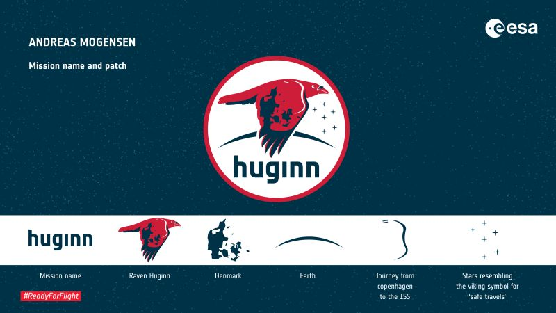
Bildquelle: ESA HuginnDieser vom Pilot gewählte Name hat seinen Ursprung in der nordischen Mythologie mit Huginn und Muninn zwei Raben des Gottes Odin. Zusammen symbolisieren die beiden den menschlichen Geist, wobei Huginn das Denken und Muninn das Gedächtnis darstellt. Diese Vögel sind nicht nur Spione oder Boten des höchsten Gottes, sie dienen auch als seine Vertrauten und Berater und sprechen mit menschlicher Sprache. Im Morgengrauen schickt Odin sie zu einem Flug durch ganz Midgard, um weltliches Wissen zu sammeln und ihm jeden Abend Bericht zu erstatten. Darin sieht Andreas Mogensen Parallelen zur bemannten Raumfahrt, in der Astronauten in den Weltraum fliegen und diese Erkenntnisse zur Erde zurückbringen.
Auf dem Patch der Mission fliegt Huginn nach rechts und bewegt sich in die Zukunft, während er über einen Horizont gleitet, der auf der Erde aufgeht und der auch als Mond oder Mars gesehen werden könnte. Huginns Flügel weist eine Schattierung in Form von Andreas Heimat Dänemark auf, während die weiße Schwinge des Flügels die Reise von Andreas Geburtsort in Kopenhagen zur Raumstation ISS selbst darstellt. Zwei Streifen auf Huginns Rücken stellen die charakteristischen Solaranlagen der Station dar und stellen auch dar, dass dies Andreas zweite Stationsmission ist. Sechs Sterne, die den Himmel dieses Patches schmücken, bilden eine Konstellation, die dem Wikingersymbol für sichere Reise ähnelt.
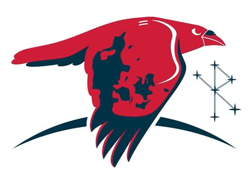
Ein in dänischer Sprache gehaltener 29-seitiger reichlich bebildeter Flyer zu der Mission kann man hier abrufen. Darin wird Andreas Mogensen als "rumviking" (Weltraumwikinger) bezeichnet. Seine ersten Raumfahrtmission "IRISS" auf der ISS hatte Andreas Mogensen vom 02. bis 12.09.2015 absolviert. In der Broschüre ist dieses Foto von Dänemark von der ISS aus gesehen aus dem Jahr 2015 abgebildet (26.08.2023 abgerufen). Den Flyer gibt es auch in englischer Sprache.
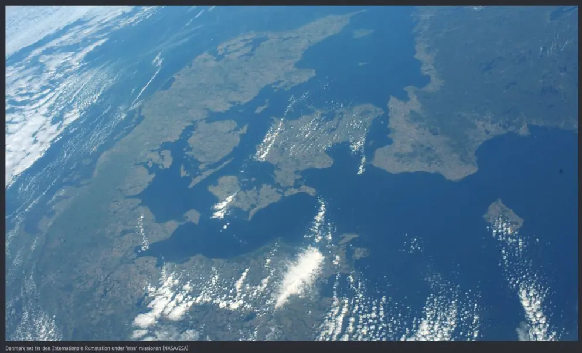
Anlässlich dieser neuen Mission "Huginn" geben die Postgesellschaften der Färöer und Grönlands, Posta und Tusass, gemeinsam einen Briefmarkenblock heraus in Zusammenarbeit mit der ESA - European Space Agency - Erstausgabetag 11.08.2023.
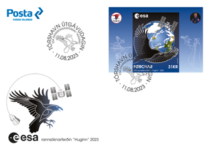
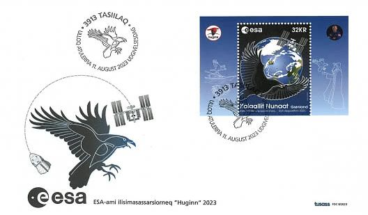
Ergänzend gab es auch eine zweite Mission - vom 18.01.2024 bis zum 09.02.2024 - mit dem Namen des zweiten Raben von Odin, nämlich die Mission "Muninn" geben. Es handelt sich um einen Raumflug des privaten Unternehmens Axiom Space zur Internationalen Raumstation.
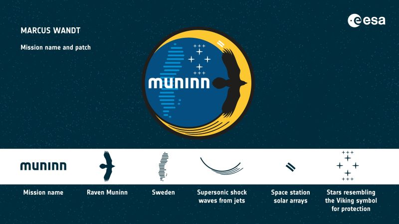
Bildquelle: ESA MuninnBei der ESA heißt es dazu: "Die erste Mission des ESA-Projektastronauten Marcus Wandt im Weltraum, Muninn, hat ihren Namen von der nordischen Mythologie und einem der beiden Raben des Gottes Odin Munnin und Huginn. Zusammen symbolisieren die beiden den menschlichen Geist. Huginn ist der Name der ISS Raumstationsmission des ESA-Astronauten Andreas Mogensen. Dem Mythos zufolge dienen die Raben als Boten und Berater ihres Gottes und teilen alles, was sie sehen und hören. Munnin kommt vom altnordischen Wort munr, das mit Leidenschaft und Emotion übersetzt werden kann und eine Verbindung zu Marcus Begeisterung für die Raumfahrt herstellt.
Muninn wird auf dem o.a. Patch dargestellt, wie er um die Erde gleitet, um das bei Marcus Mission gesammelte Wissen zu teilen. Der dunkelblaue Kreis stellt die Erde dar und enthält hellere Linien, die Marcus' Heimat Schweden darstellen. Der Aufnäher zeigt die beiden Farben der schwedischen Flagge Blau und Gelb. Die beiden weißen Streifen neben Muninns Oberflügel verweisen auf die charakteristischen Solaranlagen einer Raumstation, Marcus zukünftiger Heimat im Weltraum. Die Sterne ähneln einem Wikingersymbol für Schutz. Die Sterne erinnern Marcus auch an die Schönheit der Schneeflocken an kalten Wintertagen in Schweden. Die Linien, die von Muninns unterem Flügel ausgehen, beziehen sich auf Überschallstoßwellen von Jets. Marcus ist Testpilot der schwedischen Luftwaffe."
24.08.2023
An dieser Stelle berichte ich heute mal wieder zu Ereignissen mit dem Bezug "Wikinger"außerhalb von Dänemark. In Oslo, auf der Halbinsel Bygdøy, befindet sich das Wikingerschiffshaus, das bei seiner Eröffnung im Jahr 1926 für 40.000 Besucher ausgelegt war, aber zuletzt jährlich über eine halbe Million Besucher hatte. Im Laufe der Zeit haben Erschütterungen durch das Publikum, Temperaturschwankungen und unzureichende Stützsysteme die Schiffe beschädigt, und Experten befürchteten einen völligen Zusammenbruch.
Ein Museumsneubau war von daher unbedingt erforderlich, damit die Zerstörung der drei Wikingerschiffe und anderer fragiler Objekte aus der Wikingerzeit zumindest verlangsamt werden kann und das kulturelle Erbe auch für zukünftige Generationen erlebbar gemacht wird. Für die Wikingerschiffe stellt das in unmittelbarer Nachbarschaft angedachte Bauprojekt natürlich ein großes Risiko dar, aber man musste etwas tun. Um das Risiko von Vibrationen und anderen Stößen durch den Bauprozess zu verringern, werden die Schiffe auf riesige Stahlplattformen gebaut, die jeweils bis zu 50 Tonnen wiegen. Diese Gerüste ruhen nun auf vier starken Stahlträgern, die im Keller des ehemaligen Wikingerschiffhauses zu finden sind. Die Schwingungen der Bauarbeiten werden in diesen Balken aufgefangen und durch Schwingungsisolatoren gedämpft. Auf diese Weise seien die Wikingerschiffe minimalen Vibrationen und Erschütterungen ausgesetzt. Während des Bauprojekts werden die im alten Museum verbliebenen Wikingerschiffe und -schlitten genau überwacht. Jeder, der auf der Baustelle arbeitet, verfügt über einen Alarm, der ein Signal gibt, wenn die Erschütterungen den zulässigen Grenzwert für die Objekte überschreiten. Später werden die Objekte / Schiffe auf Schienen in den angrenzenden Neubau transportiert.
In diesem Video wird - in norwegischer Sprache - erläutert welch ein Aufwand betrieben wird, um die drei bestbewahrten Wikingerschiffe der Welt - Oseberg Schiff - Gokstad Schiff - Tune Schiff - während der Bauarbeiten in der Nachbarschaft zu sichern und für den Umzug in das neue Museum "Vikingtidsmuseet" fit zu machen, das im Jahr 2026 eröffnet werden soll. Der Spatenstich zu dem neuen Museum, das aktuell wohl (mindestens) 3,8 Milliarden norwegische Kronen (ca. 330 Millionen Euro) kosten soll, fand bereits am 14.02.2023 statt.
Unten, mit Datum 14.09.2021, hatte ich bereits diese Informationen zu den drei norwegischen Wikingerschiffen eingestellt:
In dieser Rubrik habe ich heute auch einmal Links zu 3D Ansichten der norwegischen Wikingerschiffe von Oseberg, Gokstad und Tune, sowie zu dem dazugehörigen Fundgut eingestellt.
20./21.08.2023
Innerhalb der Webseite zu Jelling gilt es nun noch eine Unterseite zu erarbeiten, die sich den drei Langhäusern widmet, die innerhalb der nordöstlichen Ecke der Palisade - entdeckt wurden. Diese Häuser - 24 m lang - sind kleinere Varianten der sogenannten "Trelleborghäuser" die es ihrerseits auf 29,42 m Länge und eine (größte) Breite von 7,90 m bringen. Diese wurden - dendrochronologisch datiert - im Winterhalbjahr 980/81 erbaut. Von daher wird angenommen, dass es sich in Jelling um deren Vorläufer handelt. Die Häuser sind sicherlich zeitgleich mit der Palisade um 968 erbaut.

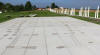
Die Grundrisse der drei Langhäuser wurden 2013 mit 4 % weiß Betonplatten - ingesamt 574 Stück bei einer Größe von je 0,1 x 1,2 x 2,4 m und einem Gewicht je 700 kg - visualisiert. Die Grabungsbefunde - Pfostenlöcher u.a. - wurden aus deren Oberfläche herausgefräst.
18.08.2023
Im Sommer 2022 begann in Roskilde auf der Bootswerft des Wikingerschiffsmuseums ein weiteres spannendes Bauvorhaben - eine 1:1 Rekonstruktion des Skuldelev 5 Schiffes (Das kleine Langschiff). Die Arbeiten sind auf die nächsten vier Jahre angelegt. Das Schiff wurde um das Jahr 1030 in Dänemark gebaut, hatte eine Länge von 17,3 m / Breite 2,5 m / Tiefgang 0,6 m, trug 30 Mann Besatzung und hatte 26 Ruderpaare. Das Schiff wurde damals aus neuem und wiederverwendeten Holz erbaut. Es ist das einzige dänische Wikingerschiff mit einer geschnitzten Verzierung im Ringerike Stil (sechster Plankengang achtern an Backbord). Es gibt in Roskilde bereits den Nachbau dieses Schiffes aus den Jahren 1990/91 - die Helge Ask - die aber aufgrund ihres Alters wohl alsbald ausgemustert werden muss.
09. bis 23.08.2023
Im nächsten Schritt habe ich zu Jelling eine Unterseite zu der gigantischen Schiffssetzung angelegt, die aus ca. 390 Steinen geformt wurde, eine Länge von 356 m hat und eine (größte) Breite von 80 m aufweist. Ihr Verlauf / Ausmaße wurden im Jahr 2013 - im Zusammenhang mit der modernen Rekonstruktion der Palisade - aus insgesamt 133 (4 % weiß) Betonplatten (Größe je 0,1 x 1,2 x 2,4 m - Gewicht je 700 kg) nachgezeichnet. Im Bereich der Nordspitze ragen davon insgesamt 10 Stück aus dem Boden. Meine nachfolgenden Fotos vom 17. und 18.06.2022 zeigen das Südende vom Südhügel aus und die Nordspitze mit dem aufragenden Vordersteven. Es ist darüber natürlich mit Abstand die weltweit größte Schiffssetzung ihrer Art!

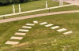

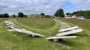

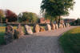
Zum Vergleich mal diese Aufnahme vom Juni 200006./07.08.2023
Nun habe ich mir zu Jelling den Unterabschnitt "Palisade" vorgenommen und versuche dort das größte bekannte Bauwerk der Wikingerzeit - über dendrochronologische Untersuchungen erwiesenermaßen wohl im Jahr 968 unter der Führung von König Harald Blauzahn erbaut - umfassend aufzubereiten. Da muss ich zu unzähligen wissenschaftlichen Erkenntnisse aus etlichen Jahren Forschung berichten. Die ersten Spuren fanden sich nämlich bereits im Oktober 2005. Die sichere Datierung auf das Jahr 968 wurde am 16.08.2013 vom Nationalmuseum verkündet und in dem Jahr wurde auch die Palisade, die eine Kantenlänge von ca. 360 m aufweist durch 4 % weiß Betonpfeiler auf 4 % weiß Betonplatten (davon insgesamt 627 Stück von je 0,1 x 1,2 x 2,4 m mit einem Gewicht von je 700 kg) in der Landschaft angedeutet! Die insg. 316 (4 % weiß) Betonpfosten haben einen Durchmesser von je 28 cm, stehen immer paarweise zusammen, haben eine Länge von 352 cm und 490 cm und ragen 225 cm, bzw. 360 cm über der Erdoberfläche in den Himmel. Sie stecken jeweils ca. 130 cm in der Erde und sie wiegen jeweils 700 kg bzw. 1100 kg. Die Gesamtlänge der heute aufgestellten Palisadenreihe beträgt ca. 850 m! Zum Größenvergleich habe ich mal - 18.06.2022 - mein Fahrrad (Pedelec) davorgestellt. Daneben ist der rekonstruierte Abschnitt - 4 x 6 m - zu sehen, der am 30.06.2018 fertiggestellt und eingeweiht wurde. Er steht im Bereich Eingang Vestergade des Museum Kongernes Jelling.


Durch eine größzügige Zuwendung des "A.P. Møller Fonden" von 35 Millionen DKK (ca. 4,7 Millionen Euro) im Jahr 2021werden in Jelling weitere Veränderungen bis 2024 vorgenommen. Es soll z.B. der westliche Verlauf der Palisade ebenfalls visualisiert, neue städtische Grünanlagen und Gehwege angelegt und der Verlauf des Heerweges sichtbar gemacht werden. Im Jahr 2009 hatte die "A.P. Møller Stiftung" bereits 70 Millionen DKK (ca. 9,4 Millionen Euro) bewilligt, worüber die bisherigen Maßnahmen bezahlt werden konnten.
Nachtrag vom 23.09.2023
Auf diesem neuen "Skraafoto" vom 13.05.2023 -
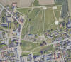
Nutzung frei von Urheberrechten / gehört zur dänischen Behörde für Datenversorgung und Infrastruktur - "Styrelsen for Dataforsyning og Infrastruktur" - abgerufen am 23.09.2023 - sieht man wie in Jelling in dem Zusammenhang schon schwer gewerkelt wird. Man erkennt, dass die Rekonstruktion eines Ausschnitts der Palisade von ihrem Standort etwa knapp 60 m weit nach n-w versetzt wurde. Es geht hier um die Visualisierung des westlichen Verlaufs der Palisade. Arbeitsmaschinen und neue Betonplatten sind auf diesen extrem hochauflösenden Luftfotos an den drei Hausgrundrissen in der n-o Ecke innerhalb der Palisade erkennbar - Reihenfolge von links nach rechts - siehe hier:
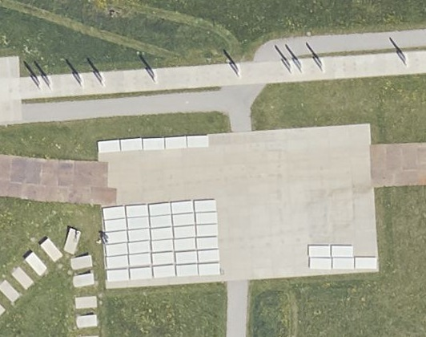
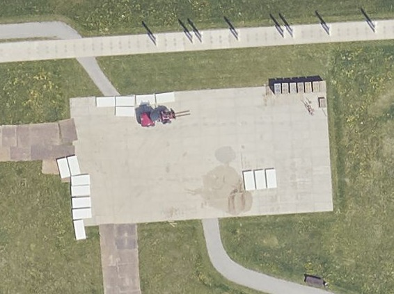
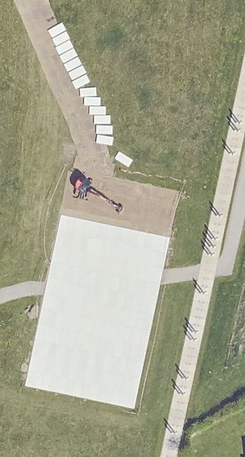
Über einen Vor-Ort-Kontakt habe ich in Erfahrung bringen können, dass die Arbeiten voll im Gange sind. Er schrieb mir per E-Mail (gekürzt): "Die Hausmarkierungen werden komplett ersetzt. Es geschieht, weil Ungenauigkeiten in der Markierung der Grabungsbefunde der Langhäuser im Vergleich zu ihrer Ausgrabung aufgetaucht sind. Alle weißen Betonplatten sind ersetzt und man hat mit dem Sandstrahlen der richtigen Markierungen begonnen. Gleichzeitig wurde ein viertes Haus hinzugefügt (Im Bereich zwischen Bild 2 und Bild 3). Das Haus, für das die Archäologen keine eindeutige Erklärung finden konnten, befand sich in der Nähe der Palisade im Osten, wurde aber nicht zeitgleich gebaut. Sie nannten es das Wirtschaftsgebäude, weil es deutlich kleiner als die Langhäuser war, aber der Baustil war derselbe, also eindeutig Harald Blauzahns Bauweise. In der Stadt Jelling wird derzeit der Asphaltbelag mehrerer Straßen innerhalb der Palisade durch Kopfsteinpflaster ersetzt. Die Arbeiten werden voraussichtlich erst im nächsten Jahr abgeschlossen sein. Es gibt jetzt Markierungen der Palisade im Westen, die die Archäologen 2019/20 ausgegraben haben."
Leider darf ich ich die mir dazu übersandten Fotos meines Kontakts nicht auf meiner Webseite veröffentlichen, da der Herr Wert auf sein Urheberrecht legt und ich ihm natürlich nicht garantieren kann, dass die Bilder nicht auf irgendeine Art und Weise kopiert werden.
05.08.2023
Die Seite zu dem Museum Kongernes Jelling, das am 04.06.2015 wiedereröffnet wurde, konnte ich heute überarbeitet einstellen. Beworben wird die Ausstellung auf deren Homepage mit der Beschreibung: "Die neue Ausstellung bietet eine einzigartige digitale Sinneserfahrung, um den Besuchern das Leben der Wikinger näherzubringen. Es kann angefasst, gefühlt und mitgezittert werden, wenn das Leben der Wikinger präsentiert wird. Kommen Sie mit auf eine Reise zu Geschichten im Feuerschein, dem Leben als Wikinger und Krieger, dem Einzug in Walhalla bis hin zum Übergang zum Christentum."

Wenige Tage nach meinem Besuch/Foto am 17.06.2022 - nämlich am 03.07.2022 - führte die Tour de France 2022 auf ihrer 3. Etappe von Vejle nach Sønderborg direkt am Museum vorbei, wovon das große gelbe Transparent mit der Aufschrift (übersetzt) "Blauzahn in Gelb" zeugt. In der Ausstellung war extra ein Raum der Geschichte der Tour der France gewidmet.
Der neue Museumsbau war zuvor am 03.12.2000, in direkter Nachbarschaft - westlich der Jelling Monumente - gelegen, durch ihre Majestät Königin Margrethe II. von Dänemark eröffnet worden.
04.08.2023
Heute habe ich die Webseite zum großen Runenstein von Jelling abgeschlossen. Es kann sein, dass mir da hin und wieder noch was auf-/einfällt. Aber eigentlich sollte alles drin sein. Nun werde ich die Jelling Unterseite zum Museum in Angriff nehmen, da die noch den Stand von 2000 hat, obwohl das Museum/die Ausstellung ja inzwischen nochmals völlig umgestaltet wurde.
03.08.2023
Am 28.07.2023 viel mir rein zufällig auf, dass nun auf der Webseite "handrit.is" die Handschrift AM 366 fol. als hochauflösendes Digitalisat verfügbar ist. Das kann noch nicht lange her sein! Zuvor musste die Digitalisierung nämlich aus Personalmangel (Fotograf) warten, wie man mir noch in 2022 auf Anfrage mitgeteilt hatte. Bis dato war über diesen Link des Instituts für Nordische Studien und Linguistik (NorS) in Kopenhagen lediglich das Abbild eines einfachen sw Microfilms abrufbar, der am 13.09.2004 angefertigt wurde. Jetzt sind die Handschriften von Jon Skonvig (*1600 - 1664, Pfarrer und der Runenzeichner für Ole Worm) aus den Jahren 1627 / 1629 zu den dänischen Runensteinen, die er damals aufgesucht, erfasst und gezeichnet hatte endlich komplett - siehe "Arnamagnæanske samling, AM 366-371 fol." Welche Freude! DANKE!
Die drei Handschriften können über die Webseite "handrit.is" als einzelne Blätter, aber auch jeweils komplett als pdf-Datei heruntergeladen werden - AM 366 - AM 367 - AM 369 - z.B. in der Seiten-Sprachauswahl EN jeweils rechts unter "PDF all-in-one" auf "Information" und dann auf "Download" klicken.
AM 366 fol. - Lolland und Fünen - geschrieben in Dänemark im Jahr 1627, nach dem 9. August (an dem Tag hat Skonvig den Auftrag erhalten) - 19 Blatt - 287 x 195 mm - vorne Eintrag "A.M. 366 fol. - Overført: 13 bl. 17/5 86" - 14 Seiten beschrieben - Zeichnungen alle mit Bleistift, Beschreibungen mit schwarzer Tinte auf Dänisch
Von dieser Handschrift haben sich zwei Abschriften in der Königlichen Bibliothek in Kopenhagen erhalten. Eine erstellt von Bertel Christian Sandvig (*05.12.1752 - 12.03.1786, Gelehrter) - NKS 726 n kvart (In der KB seit 28.01.1879). Die zweite wurde im Jahr 1776 von Sæmund Magnussen Holm (*1749 - 1821, Pfarrer) für Peter Frederik Suhm (* 18. Oktober 1728 - 7. September 1798, Historiker) angefertigt - NKS 474 folio - In KB zwischen 1788 und 1831 eingeliefert.
AM 367 fol. - Jütland - geschrieben in Dänemark ca. 1629 - 20 Blatt - 298 x 197 mm - vorne Eintrag "A.M. 367, folio - Overført: 18 bl. 17/5 86" - 25 Seiten beschrieben - Zeichnungen alle mit Bleistift, Beschreibungen mit schwarzer Tinte auf Dänisch
Hiervon hat sich eine Abschrift in der Königlichen Bibliothek in Kopenhagen erhalten. NKS 475 folio - Monumenta runica Cimbrica - In KB zwischen 1788 und 1831 eingeliefert - Ebenfalls von Sæmund Magnussen Holm (*1749 - 1821, Pfarrer) für Peter Frederik Suhm (* 18. Oktober 1728 - 7. September 1798, Historiker) erstellt.
AM 369 fol. - Schonen und Blekinge - geschrieben in Schweden im Sommer 1627 - 25 Blatt und 1 Halbblatt - 314 x 202 mm - vorne Eintrag "A.M. 369, fol. - 19 bl. + bl. 2 bis. 5/3 11" - 28 Seiten + 1 Halbblatt beschrieben - Zeichnungen alle mit Bleistift, Beschreibungen mit schwarzer Tinte auf Dänisch
Auch hier hat sich eine Abschrift in der Königlichen Bibliothek in Kopenhagen bewahrt - Kall 639 kvart - Erstellt von Bertel Christian Sandvig (*05.12.1752 - 12.03.1786, Gelehrter) - Sammlung von Abraham Kall (*02.07.1743 - 05.12.1821, Historiker) - In KB nach dessen Tod 1821 eingeliefert.
Zu anderen dänischen Landesteilen gibt es keine Aufzeichnungen von Jon Skonvig, oder sie sind im Laufe der Zeit verloren gegangen.
Diese drei alten Handschriften sind heutzutage jeweils in einen Kartoneinband gebunden, der mit Marmorpapier überzogen ist, über einen Rücken und Ecken aus Leinwand verfügt und sie sind jeweils mit roter Tinte durchnummeriert. Dies wurde durch den ersten Bibliothekar der Arnamagnæanske Sammlung, Herrn Peter Erasmus Kristian Kålund (*19. August 1844 - 04. Juli 1919),
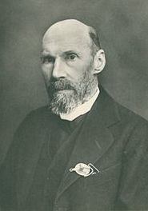
Bildquelle: Wikipedia - Lizenz: Public Domainderen Leiter er 1883 wurde, vorgenommen. Sein wichtigstes Werk im Dienste der bis dahin etwas vernachlässigten Sammlung ist die Herausgabe eines umfassenden Katalogs, der 188994 in zwei Bänden erschien (Band 1 - Band 2).
Im Rahmen meines 2022er Kopenhagen Studientripp habe ich dieses Institut am Mittwoch, 28.09.2022, besucht und hatte dort die Ehre diese drei alten Handschriften in Händen halten, ausgiebig studieren und auch noch fotografieren zu dürfen! Mange tak!
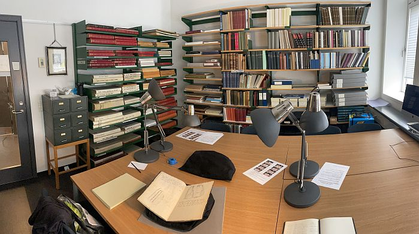
Zur Person Jon Skonvig habe ich hier weitere Informationen gesammelt.
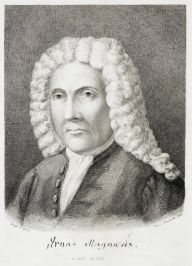
Bildquelle: Wikipedia - Lizenz: Public Domain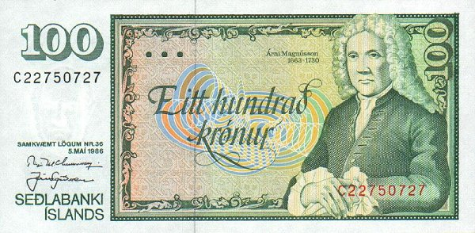
Bildquelle: Wikipedia - Lizenz: Public Domain
Der isländische Philologe und Historiker Árni Magnússon (Arnas Magnæus in Latein - *13.11.1663 07.01.1730) war (ab 1702) Professor für dänische Altertümer an der Universität Kopenhagen. Er vermachte der Universität Kopenhagen seine Manuskriptsammlung, seine Bücher und sein Vermögen (Leider sind zwei Jahre zuvor beim Großbrand im Oktober 1728 in Kopenhagen zahlreiche Werke aus seiner enormen Sammlung den Flammen zum Opfer gefallen). Seit 1772 wird die Sammlung von der "Den Arnamagnæanske Kommission" unter dem Dach der Universität Kopenhagen verwaltet. Im Jahr 1956 wurde das "Det Arnamagnæanske Institut" bei der Universität Kopenhagen gegründet, u.a. mit dem Ziel, die Bestimmungen der Stiftung, die von dem geerbten Vermögen von Árni Magnússon ins Leben gerufen wurde, zu erfüllen. Die Handschriftensammlung umfasst heutzutage ca. 3.000 Werke, die per Vertrag von 1971 zwischen Dänemark und Island geteilt sind; Der dänische Teil wird in der Arnamagnæanske Samling des Nordischen Forschungsinstituts aufbewahrt. Im Jahr 2009 wurde die gesamte Sammlung in die UNESCO-Liste des unveräußerlichen schriftlichen und audiovisuellen Kulturerbes Memory of the World Register aufgenommen.
Webseite der Universität Kopenhagen - Den Arnamagnænske Samling - Die in Kopenhagen aufbewahrten Handschriften können dieser Übersicht entnommen werden.
In dem Zusammenhang möchte ich auf diese sehr interessanten Webseiten in deutscher Sprache verweisen:
Isländische Handschriften - Sammeln von Handschriften und Árni Magnússons Sammlung - Die Anfänge des Sammelns - Humanismus im 17. Jahrhundert - Årni Magnússon - Brand in Kopenhagen und die Arnamagnäanische Sammlung
24.07.2023
Heute habe ich mich zur Abwechslung mal wieder mit meiner Briefmarkensammlung mit weltweiten Wikingermotiven beschäftigt. Dabei kam mir die Idee meine Access Datenbank die ich zu meiner Sammlung führe - ca. 600 verschiedene Briefmarken - hier anzubieten. Dazu habe ich sie in eine Excel-Datei exportiert und die dann als htm/html abgespeichert.
Briefmarken_Wikinger_Motive_Stand_24.07.2023.htm
Ich habe zu den einzelnen Briefmarken auch Ersttagsbriefe usw. in meiner Sammlung und innerhalb der Access Datenbank alles mit Fotos der Briefmarken/FDC usw. hinterlegt, so dass ich da immer schnell Bescheid weiß. Hier eine kleine Auswahl:
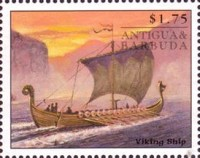 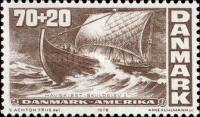 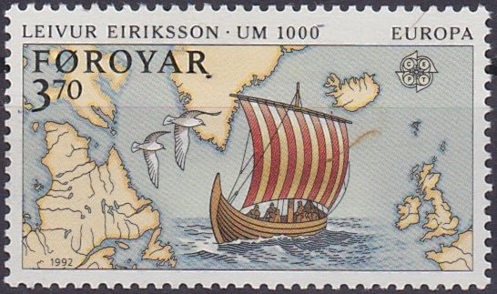 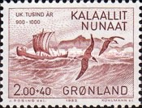 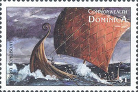 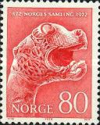 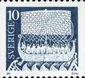 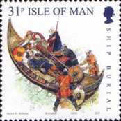 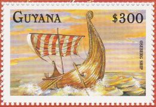 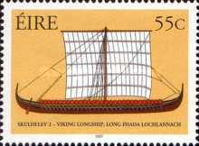 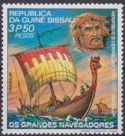 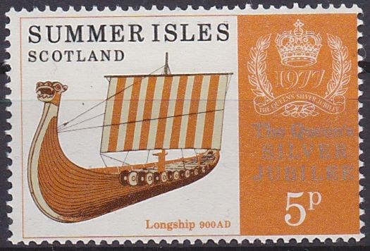 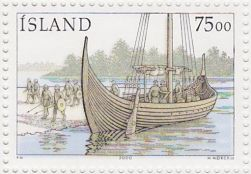
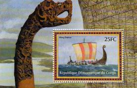
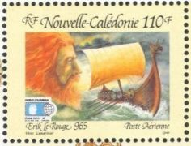
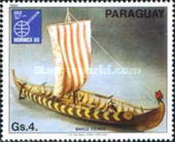
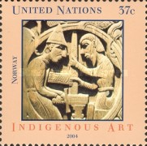
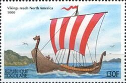
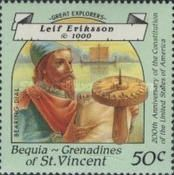
Jetzt hoffe ich nur, dass sich nicht irgendjemand wegen einer Urheberrechtsverletzung - Veröffentlichung einer Abbildung einer Briefmarke - bei mir - womöglich noch mit einer (kostenpflichtigen) Abmahnung - meldet. Zur rechtlichen Einschätzung habe ich diese Aussage von Herrn Rechtsanwalt Dennis Tölle auf dessen Webseite "Recht am Bild" gefunden: "...Derzeit ist die Rechtsprechung ebenfalls dieser Ansicht und sieht Briefmarken als gemeinfrei an. Da die Rechtsprechung für die Praxis das Maß der Dinge ist, sollte sich derzeit kein Philatelist Sorgen machen."
Falls mal jemand eine Anfrage zu der Thematik oder gar einen Tipp zu einer mir unbekannten Briefmarke hat, bitte gerne melden.
18.07.2023
Über das vergangene Wochenende, gestern und heute habe ich zu Jelling in einigen Bereichen Ergänzungen / Fotos aus 1994 / Errungenschaften aus meinem Kopenhagen Tripp im September 2022 usw. eingearbeitet. Stunden über Stunden habe ich schon mit Jelling verbracht und da werden auch noch etliche dazukommen.
14.07.2023
Heute möchte ich nach Möglichkeit die Webseite zum großen Runenstein - Jelling 2 - von Harald Blauzahn deutlich voranbringen.
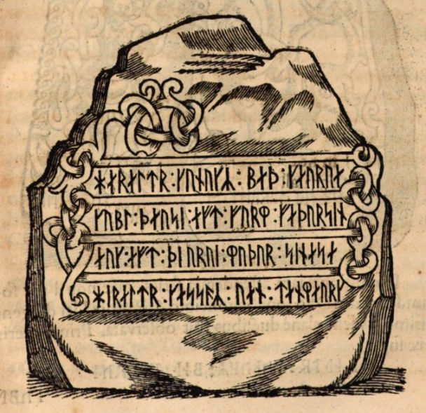
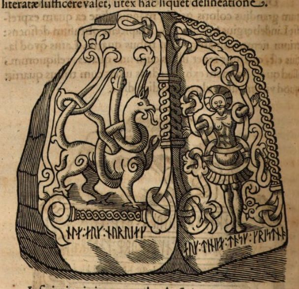
Ole Worm (*13.05.1588 - 31.08.1654, Arzt, Universalgelehrter und der Begründer der Runologie) nutzte dazu nicht die zeichnerische Vorlage von Jon Skonvig - siehe dessen völlig misslungene Wiedergabe in der Handschrift AM 367 fol. - für zwei Metallschnitte auf der S. 331 und auf der S. 332 in seinem berühmten Werk "Danicorum Monumentorum Libri Sex, Hafniae, 1643" - Lizenz: Public Domain
Bayerische Staatsbibliothek / MDZ Münchener DigitalisierungsZentrum Digitale Bibliothek - urn:nbn:de:bvb:12-bsb10800415-0 - Screnshots 14.07.2023.
Verschollenes Dokument entdeckt! - Königlicher Landvermesser Iver Peder Ellung (*1755 - 22.01.1820)
Bei meinen heutigen Arbeiten bin ich doch glatt auf ein längst verschollenes Dokument gestoßen, dass ich am 27.09.2022 in der Königlichen Bibliothek in Kopenhagen bei der Durchsicht der Hinterlassenschaft von P. G. Thorsen (*07.08.1811 - 06.05.1883, Bibliothekar, Runenforscher und Historiker) - unter NKS 3296 kvart in mehreren einzelnen Pappschachteln verwahrt - auffand. In der Schachtel mit der Nummer 17 war diese Aufzeichnung vom Königlichen Landvermesser Iver Peder Ellung (*1755 - 22.01.1820), die dieser auf den 14. Juni 1800 datierte und die in "Jacobsen/Moltke, Danmarks Runeindskrifter, Text, 1942" in der Spalte 68, 1. Eintrag unter "19. årh." zwar erwähnt wurde, dort aber schon mit einem "" für "verschollen" gekennzeichnet war!


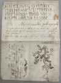
Darin eingebunden ist auch diese kleine zierliche Wiedergabe der Jelling Monumente - immerhin schon 223 Jahre alt!
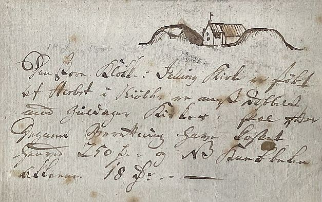
Das ist jetzt bereits mein 2. Fund eines verschollenen Objektes im Rahmen meiner Recherchen in der Königlichen Bibliothek in Kopenhagen im September 2022!
Siehe unten - 30.03.2023 - Verschollener Bericht von 1837 von Cap. August Baggesen in der "Kgl. Bibliotek" in Kopenhagen entdeckt!
13.07.2023
In meinen Unterlagen/Sammlung zu Jelling habe ich etliche Ausgaben der "Jelling Touristinfo" ab ca. 1983 und aus den Ausgaben von 1988 und 1990 habe ich heute einige Fotos zum Bau des Jelling Orm eingescannt, sowie ein altes Prospekt zu dem Projekt eingestellt. Außerdem geht es heute noch etwas an das Thema "Jelling - Geschichte".
12.07.2023
Verschiedene Fotos / Zeichnungen der Funde aus den Jahren 1820-21 habe ich heute aufbereitet und zur Jelling Geschichte hinzugefügt.
Der Ausgrabungsbericht erhielt damals den Titel "Efterretninger om Mindesmærkerne ved Jellinge og de derved i Aarene 1820 og 1821 foretagne Undersøgelser m. m.". Darin präsentierten Prof. Finnur Magnussen und Christian Jürgensen Thomsen die Ergebnisse der Ausgrabungen 1820 und 1821 in der Zeitschrift Antiquarieske Annaler, Band IV.I - 1823 (Ich finde das nur unter 1827!). Der Bericht wurde 1823 auch in Form eines kleinen Büchleins separat veröffentlicht (als Nachdruck: Aarhus 1973, Wormianum).
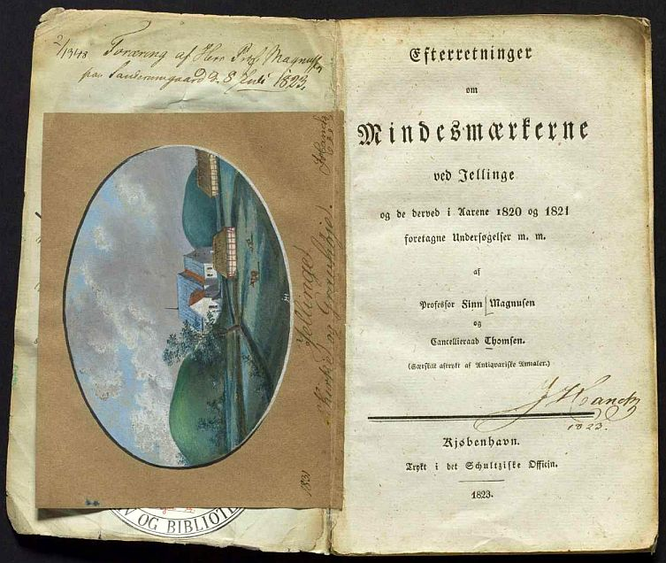
Bildquelle: Digitale Sammlung des Nationalmuseums Kopenhagen - Lizenz: Public Domain
Dieses Exemplar gehörte J. H. T. Hanck (Johan Henrik Trutzschler Hanck - *26. Januar 1776 - 23. Juli 1840 dänischer Zeichner, Maler, Assistenzprofessor), der bei den Ausgrabungen selbst dabei war und der es ausweislich seines handschriftlichen Eintrages (links oben) am 08. Juli 1823 von Prof. Magnusen auf dem Gutshof Sanderumgård verehrt bekam. Später hat er noch diese hübsche, selbstgefertigte Zeichnung der Jelling Monumente, datiert auf das Jahr 1831, eingeklebt.10.07.2023
Gestern hatte ich auch noch die von Martin Friedrich Arendt (* 22. Februar 1773 in Altona; April 1823 in der Nähe von Venedig/Italien, deutscher Botaniker und Altertumsforscher) im Antikvarisk -Topografisk Arkiv in Kopenhagen verwahrten Aufzeichnungen innerhalb der Geschichte von Jelling aufgearbeitet. Bei meinem Besuch in diesem Archiv am 27.09.2022 durfte ich dessen Hinterlassenschaft zu Jelling - insgesamt 6 Notizzettel - selbst fotografieren. Martin Friedrich Arendt war mit Johann Wolfgang von Goethe (*28.08.1749 - 22.03.1832, Dichter und Naturforscher) bekannt und wurde von diesem als "wandernder Antiquar" betitelt.
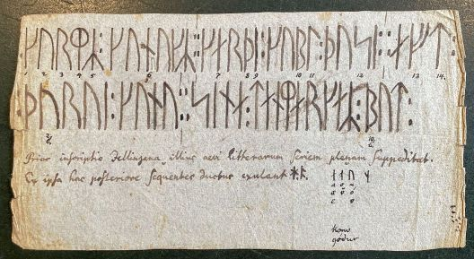
Heute habe ich mit den Ereignissen des Jahres 1820 - die Ausgrabungen am Nordhügel - u.a. mit dem Fund des kleinen silbernen Bechers (4,5 x 5,5 cm, ca. 35 ml Fassungsvermögen) usw. weitergemacht. Über diesen Link der Digitale Sammlung des Nationalmuseums Kopenhagen kann eine Aufnahme des originalen Bechers stufenlos gedreht werden, worüber eine komplette Ansicht der rundherum verlaufenden Ornamentik möglich wird! Tolle Sache - Danke.
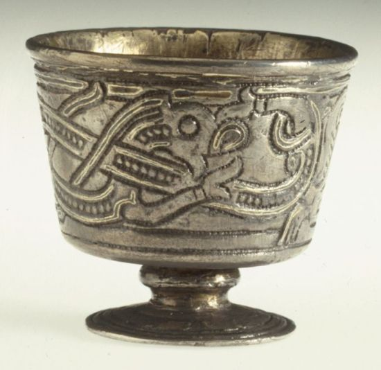
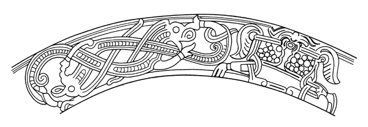
Abwicklung der kompletten Ornamentik - frei von Urheberrechten.Dazwischen gilt es immer wieder viel Literatur (Vornehmlich in dänischer Sprache) zu lesen, Zeichnungen zu sichten und das ganze in Form zu bringen. Bei der andauernden Hitze will ich eh nicht raus.
09.07.2023
Heute habe ich innerhalb der Geschichte zu Jelling die Passage zu dem Drucker Aosmann Isfron, der 1797 von Vejle nach Jelling kam, wo er mit größter Aufmerksamkeit die Hügel und die beiden Runensteine studierte, aufbereitet. Aus seinem Besuch resultiert das kleine Manuskript mit dem Titel "Monumentum Jellingense" das heute in der Handschriftensammlung der Königlichen Bibliothek in Kopenhagen unter NKS 801 kvart vorgehalten wird. Aus den einzelnen Fotos, die ich bei meinem Besuch am 26.09.2022 anfertigen durfte, habe ich eine komplette Ausgabe des Originals als pdf-Datei erstellt. Hier seine Zeichnung separat zur Ansicht.

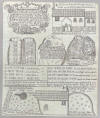
08.07.2023
Ich arbeite aktuell weiterhin an den Webseiten zu Jütland - 78 - Jelling, was erwartungsgemäß sehr viel Zeit in Anspruch nimmt, da es unzählige Quellen zu Jelling gibt. Ich wechsele dabei auch immer mal hin und her, vom Jelling 1 - Runenstein von
Einige der ältesten detaillierten dänischen Karten stammen aus der Mitte des 16. Jahrhunderts, als der Kartograf Johannes Mejer (*1606 - 1674) eine große Anzahl Karten des damaligen dänischen Königreichs anfertigte. Ein charakteristisches Merkmal von Mejers Karten sind unter anderem die feinen Signaturen. Dörfer und Gemeinden sind mit kleinen Gebäuden und Kirchen gekennzeichnet und die Bäche durchschneiden die Landschaft wie kleine Flüsse. Auf zwei Karten ist Jelling mit einer Kirchensignatur gekennzeichnet, die den Status der Stadt als Pfarrstadt widerspiegelt. Darüber hinaus hat Mejer Jelling zwei hohe Signaturen eingezeichnet eine auf jeder Seite der Kirche die den Nord- und Südhügel wiedergeben. Johannes Mejer wusste daher nicht nur um die hohen Hügel in Jelling, sondern betrachtete sie auch als ein so wichtiges Merkmal der Stadt Jelling, dass sie auf seinen Karte eingezeichnet werden mussten.
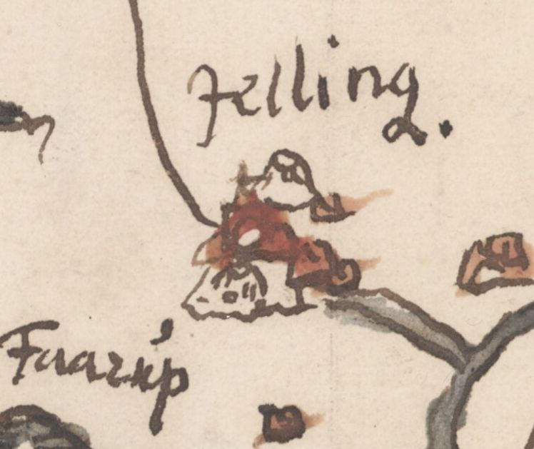
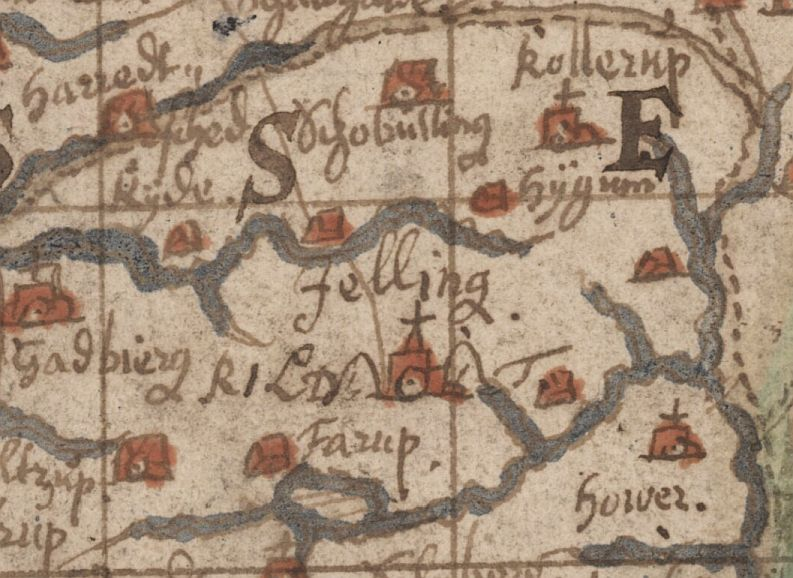
Die Original Karten - frei von Urheberrechten - können über die Digitale Sammlung der Königlichen Bibliothek in Kopenhagen aufgerufen - links von 1650 / rechts von 1659 - und heruntergeladen werden.
05.07.2023
Auf den Webseiten des Dänischen Nationalmuseums - Danmarks Kirker - kann man eine in dänischer Sprache gehaltene 143-seitige, bebilderte Abhandlung als pdf-Datei zur Baugeschichte/Innenausstattung der Kirche von Jelling aus dem Jahr 2022 abrufen. Diese Abhandlung ist nicht nur quasi brandneu, sondern handelt neben der Kirche, ihrer Baugeschichte und Ausstattung auch den kompletten Jelling Komplex ab - Runensteine / Grabhügel / Schiffssetzung / Palisade / Kirche mit Wandgemälden / usw. - und alles mit tollen Fotos.
02.07.2023
Gestern habe ich angefangen innerhalb der Seite von Jelling den Abschnitt zum großen Runenstein von König Harald Blauzahn (Jelling 2) zu überarbeiten. Zunächst habe ich meine Fotos der letzten Besuche (2013 / 2015 / 2022) gesichtet und eine Auswahl getroffen/eingestellt. Mit dem Text zur Geschichte von Jelling konnte ich auch anfangen und habe auch bereits einiges eingefügt.


Tagsüber sind die Runen / Bilder / Ornamente je nach Witterung / Sonnenstand häufig nur schwach erkennbar. Deshalb habe ich bei meinen letzten Besuchen - immer mit Übernachtung in Jelling (Campingplatz) - mehrmals die "Blaue Stunde" genutzt. Durch die dann herrschenden Lichtverhältnisse in Verbindung mit der integrierten Beleuchtung in der Bronze-Überdachung sieht das dann ganz anders aus!
30.06.2023
Im Rahmen meiner 2022er Jütland Wikinger Tour hatte ich am Samstag, 18.06.2022, gegen 11.15 Uhr, von Jelling kommend nach ca. 2,5 km den südlich gelegenen Fårup See aufgesucht. Dort liegt der freie Nachbau eines Wikingerschiffes - der Jelling Orm.

Weitere Informationen / Bilder zu dem freien Nachbau eines Wikingerschiffes aus den Jahren 1986-1990 habe ich innerhalb von Jelling eingestellt.
26.06.2023
Die Informationen zu Jelling 1 - Runenstein von Gorm der Alte - aus den unterschiedlichsten Quellen wären nun eingearbeitet und die Seite zusätzlich mit neuen Fotos von mir versehen. Da werden sicher noch Kleinigkeiten nachträglich einzubauen sein, bzw. mir irgendwas auffallen usw. Aber vom Grundsatz her sollte es das mal gewesen sein.
ab 21.06.2023 / 26.06.2023
Um die Webseite zu Jütland - 78 - Jelling zügig voranzubringen, habe ich zuletzt täglich einige Stunden investiert. Der Abschnitt zum Runenstein 1 - Gorm der Alte - nimmt darüber langsam Form an. Ich konnte hier schon einiges einarbeiten, werde aber auch noch eine Weile brauchen, da die Fülle des Materials immens ist.
Diese Skizze von Jon Skonvig (*1600 - 1664, Pfarrer und der Runenzeichner für Ole Worm), die den kleinen Runenstein liegend wiedergibt, stammt von seinem dortigen Besuch 1629.


Ich habe mal all meine Fotos zum kleinen Runenstein von Jelling von den letzten Besuchen durchstöbert und die qualitativ besten herausgesucht.
19.06.2023
Bis auf 78 - Jelling bin ich mit Jütland jetzt komplett durch, d.h. ich habe alle aktuellen Fotos meiner 2022er Jütland Wikinger Tour (Mai/Juni 2022) und die vielfältigen Informationen aus meinem Kopenhagen Studien Tripp im September 2022 (Königliche Bibliothek / Rigsarkivet Kopenhagen / Universität von Kopenhagen mit der "Arnamagnæanske Samling" / Nationalmuseum Kopenhagen inklusive "Antikvarisk-Topografisk Arkiv" eingearbeitet. Die Runenstein Informationen zu Jelling 1 / 2 / 3 stehen jetzt noch aus und werden sicher sehr viel Zeit in Anspruch nehmen.
Die Informationen zum Runenstein 3 mit der Inschrift "...Basse hat das Denkmal geschaffen ..." habe ich gleich hinbekommen, da es dazu nicht allzuviel zu berichten gibt. Irgendwann in 1964 in der Mauer der Kirchhofeinfriedung von Jelling gefunden und heute in der permanenten Ausstellung von "Kongernes Jelling". Dazu zwei Fotos aus der Digitalen Bildsammlung des Nationalmuseums Kopenhagen und meine beiden Fotos - hier nur mal ein Foto - von meinem letzten Besuch am Freitag, 17.06.2022, im Rahmen meiner 2022er Jütland Wikinger Tour.

17./18.06.2023
Am 17.06.2023 wollte ich mit Jütland - H - Århus eigentlich durch sein und hatte dazu noch die beiden Webseitenabschnitte zu den Runensteinen von Hørning und Vejlby aufzubereiten gehabt.
Zu Hørning hier die Zeichnungen von Rasmus Henrik Kruse (*07.08.1796 - 30.05.1877, Landschaftsmaler und Antiquar) Zeichnung von 1857 und die von Magnus Petersen (*04.09.1827 - 01.02.1917, Archäologischer Zeichner und Restaurator) vom 11.08.1877 die er für Professor Ludv. F. A. Wimmer (*07.02.1839 - 29.04.1920, Philologe und Runenforscher) angefertigt hat. Die Zeichnung die er im Auftrag von Professor P. G. Thorsen (*07.08.1811 - 06.05.1883, Bibliothekar, Runenforscher und Historiker) 1869 gefertigt hat, habe ich leider nicht in dessen Hinterlassenschaft - in der Schachtel 17 wo sie sein sollte - vorgefunden.


Der Abschnitt zu dem Runenstein von Vejlby wurde dann aber doch erst am 18.06.2023 fertig, weil es schon etliche neue, ergänzende Informationen waren, mit denen ich hier aufwarten kann. Hier mal die Zeichnungen von Magnus Petersen (*04.09.1827 - 01.02.1917, Archäologischer Zeichner und Restaurator) für die beiden o.a. Professoren P. G. Thorsen (datiert auf den 12.12.1869) und Ludv. F. A. Wimmer (datiert auf den 13.08.1877).


Auf der linken Zeichnung sieht man am oberen Rand ergänzende Notizen, die er ca. 9 Monate später, datiert auf den 14.09.1870, angebracht hat - für Magnus Petersen gänzlich ungewöhnlich. Zu der "Hand" auf dem Stein hat er mittig, rechts außen, auf dem Blatt eine gesonderte Zeichnung eingefügt und fügt in dem o.a. Ergänzungstext am Ende hinzu, dass er keine entsprechenden Ritzungen mehr erkennen konnte.
16.06.2023
Heute war es mir möglich zu Jütland - H - Århus die neu gesammelten Informationen zu den Runensteinen Aarhus 4 - hier zwei Zeichnungen von Magnus Petersen (*04.09.1827 - 01.02.1917, Archäologischer Zeichner und Restaurator) vom 14.10.1869 und vom 11.08.1877


und zu Aarhus 5 einzustellen.


15./16.06.2023
Über die letzten beiden Tage habe ich den Abschnitt in Jütland - H - Århus zum Runenstein Aarhus 3 - den großen Maskenstein - überarbeitet. Hier habe ich mal einige verschiedene Wiedergaben der Maske zur Ansicht: Rasmus Henrik Kruse (*07.08.1796 - 30.05.1877, Landschaftsmaler und Antiquar) Zeichnung von 1857 / Magnus Petersen (*04.09.1827 - 01.02.1917, Archäologischer Zeichner und Restaurator) Zeichnung von 1869 / ein sw- Foto von Erik Moltke (*04.04.1901 - 19.10.1984, Runologe, Historiker) von 1931 / je ein Foto mir von 2015 und von 2022


14.06.2023
Innerhalb der Webseite zu Jütland - H - Århus habe ich heute die beiden Runensteine Aarhus 1 und Aarhus 2 überarbeitet. Zu beiden galt es einiges an Bildmaterial einzustellen, sowie zahlreiche textliche Informationen von verschiedenen Autoren / Forschern hinzuzufügen.
Beispielhaft für den Runenstein Aarhus 1 habe ich hier die betreffende S. 530 im "Atlas Danicus" von Peder Hansen Resen (*17.06.1625 - 01.06.1688, Jurist und Historiker) aus den 1680er Jahren und die Zeichnung von Magnus Petersen (*04.09.1827 - 01.02.1917, Archäologischer Zeichner und Restaurator), die er am 14.10.1869 im Auftrag für den Professor P. G. Thorsen (*07.08.1811 - 06.05.1883, Bibliothekar, Runenforscher und Historiker) gefertigt hat.


Zum Runenstein Aarhus 2 bringe ich hier mal die beiden Zeichnungen von Magnus Petersen (*04.09.1827 - 01.02.1917, Archäologischer Zeichner und Restaurator), die er zum einen am 12.10.1869 im Auftrag für den Professor P. G. Thorsen (*07.08.1811 - 06.05.1883, Bibliothekar, Runenforscher und Historiker) und die andere Zeichnung, die er für Professor Ludv. F. A. Wimmer (*07.02.1839 - 29.04.1920, Philologe und Runenforscher) am 12.08.1877 angefertigt hat.


Alle Zeichnungen / die Buchseite konnte ich bei meinem Besuch im September 2022 in Kopenhagen in der Königlichen Bibliothek fotografieren.
13.06.2023
Heute Abend habe ich mit der Überarbeitung der Webseite zu Jütland - H - Århus angefangen. Zunächst habe ich Fotos von meinem Besuch am Mittwoch, 08.06.2022, als ich die Sonderausstellung "RUS - Vikinger i øst", die vom 22.01.2022 bis zum 11.09.2022 stattfand, aufsuchte eingestellt. Da es mehrere Runensteine in der dortigen, permanenten Austellung gibt, wird es aber noch eine ganze Weile dauern, bis die Seite auf dem Laufenden ist.

12.06.2023
Da mir aufgefallen war, dass die jeweilige Verlinkung in meinen Webseiten zu den Runensteinen bei meinem iPhone / iPad nicht wie gewünscht zur (neuen) dänischen Runendatenbank weiterleitet, habe ich mir heute alle zu Jütland erfassten Seiten vorgenommen und die Links aus deren neuem Auftritt eingestellt. Früher endete der Link mit dem Namen des Runensteins, nun wurde der gegen eine Zahl/Gegenstandsnummer getauscht. Beim Laptop mit Win11 sieht man, wie zuerst der alte Link aufgerufen wird und dann auf den neuen Link weiterleitet, dh. auf dem Gerät funktioniert es komischerweise. War von daher eine kleine Fleissarbeit nötig, damit das jetzt überall richtig funktioniert. Bei der heutigen Hitze war ich drinnen eh besser aufgehoben.
11.06.2023
Am Samstag, 24.06.2023, öffnet das neue Museum Thy - Jernbanegade 11 - 7700 Thisted seine Pforten. Auf deren Webseite heißt es in Ankündigung auf die zukünftige Ausstellung z.B. "...Du kan også se nærmere på en vaskeægte runesten og høre fortællinger om vikinger, prinsesser og en helgenkåret præst..." - übersetzt: "...Sie können sich auch einen echten Runenstein (Ydby/Flarup) genauer ansehen und Geschichten über Wikinger, Prinzessinnen und einen heiligen Priester hören ... Das sind doch mal tolle Neuigkeiten, der Runenstein durfte sein Lager in Kopenhagen verlassen und wird nun endlich der Öffentlichkeit zugänglich gemacht! Aber ich habe von mir aus immerhin knapp 1100 km bis zum Museum! Wer weiß, wann ich den dann zu sehen bekomme!